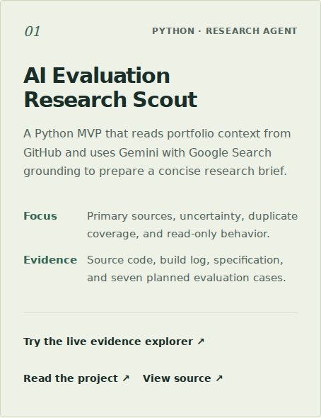
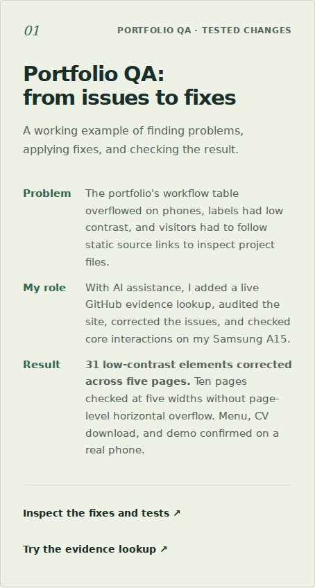

Survive the Crit / Peer review / 17 October 2026
Make the achievement
visible in the work.
A friend reviewed the live portfolio and could not clearly see the achievements behind the projects. This log records the feedback, how it was prioritized, and the changes made with AI assistance.
Inspect the revised project cases ↗ · Inspect the before-version source ↗
The proof statement used for this review
I want to prove to a hiring manager responsible for AI evaluation, AI quality, or AI training that I can make consistent, evidence-based judgments about AI-generated outputs by applying explicit evaluation criteria and documenting the reasoning behind each decision. My goal is for them to invite me to an interview for an AI Evaluation, AI Quality, or AI Training role.
Source: the existing Week 1 document, Eduardo_Seixas_What_Are_You_Proving.pdf. Intended audience: hiring managers for AI evaluation, quality, or training. Primary action: an interview invitation. The statement was included in the review-request draft prepared for the owner; the supplied chat excerpt does not independently show exactly what the reviewer received before responding.
What the reviewer actually said
Reviewer: Ruben, a friend. Source: relevant chat excerpts supplied by the portfolio owner, dated 17 October 2026, 14:20–14:21 local time. Only the relevant feedback is reproduced; unrelated personal messages are omitted.
“qual problema eles tinham, o que tu fez pra resolver, e qual foi o resultado”
“Não ficou muito claro isso pra mim”
He also asked for the achievements from each project to be made visible. In practical terms, the old cards named the tools, focus, and evidence, but did not consistently tell the reader what problem was addressed, what Eduardo contributed, or what was actually achieved.
Must-fix versus nice-to-have
Must-fix: one critique, three concrete changes
- 1. State the problem for each selected project — addressed
- Each homepage project card now includes a Problem field. This makes the reason for the work explicit instead of leaving it inside linked documentation.
- 2. State the contribution — addressed
- Each card now includes My role, identifying the work performed and AI assistance where applicable. The introduction also explicitly names Eduardo as an AI evaluator.
- 3. State the demonstrated result — addressed
- Each card now includes Result, paired with direct evidence links. Documented artifacts, measured checks, owner-reported phone testing, and still-planned validation are kept distinct.
Nice-to-have: none explicitly raised by the reviewer
The supplied feedback does not contain a separate cosmetic suggestion to classify as optional. No mandatory feedback was downgraded to this category. Additional thumbnails or a scored visual before/after case could be future enhancements, but they are author-side ideas, not statements attributed to Ruben.
What changed on the live site
- Portfolio QA now leads the selected work. Its result cites 31 corrected low-contrast elements across five pages, ten pages checked at five widths, and the owner's Samsung A15 confirmation. It links to the actual mobile fix log and live evidence lookup.
- Research Scout now states its delivery and verification boundary. Published code, a build log, and seven planned evaluation cases are presented as artifacts. A recorded live Gemini run remains required; planned tests are not described as passes. The project page was corrected to match the build log.
- The research workflow now states the problem, contribution, and five documented examples. Estimated time savings are explicitly described as estimates rather than measured productivity gains.
- The connector project now names the three recorded repository-read tasks. It makes clear that the delivered result is observable connector use and an explainer, not a custom MCP server.
- The visual project now distinguishes published work from a scored evaluation. It identifies the reviewed qualities and the public gallery as the delivered artifact, without claiming an unpublished benchmark or client impact.
Before and after
These are local browser captures of the baseline and revised source, at the same 1024-pixel-wide viewport. They are evidence of the content change, not a second review from Ruben.


Validation of the changes
The homepage, Research Scout page, and this review log were checked at 320, 390, 768, 1024, and 1440 CSS pixels: 15 layout checks with no document-level horizontal overflow. Automated axe-core checks at 390 pixels reported no violations in the selected WCAG A/AA categories. Thirty-one local links and anchors resolved. These technical checks do not replace the reviewer's clarity judgment.
Response prepared for the reviewer
Draft for the owner to send. It has not been sent automatically and does not imply the reviewer has checked the revision.
Valeu, Ruben. Teu comentário mostrou que eu estava apresentando as ferramentas e os projetos sem deixar claras as conquistas. Reorganizei os casos em problema, minha contribuição e resultado, com links para as evidências. Também deixei explícito quando o resultado é um artefato publicado e quando ainda falta uma validação.
Quando puder, olha a versão atualizada: https://eseixas89.github.io/ai-evaluation-portfolio/
Depois de dez segundos, o que tu entende que eu faço? E o trabalho apresentado te convence de que eu sei fazer isso? Se ainda faltar algo para ficar claro, me aponta.
Remaining review evidence
- The owner's record still needs confirmation that the reviewer received the Chapter 1 proof statement.
- The reviewer has not yet explicitly answered the two opening questions in the supplied excerpt.
- The revised page has not yet been confirmed as clearer by the reviewer.
The substantive critique has been acted on. This record keeps those remaining items visible instead of declaring the assignment's human-review checkpoint approved.
Resumo em português
O Ruben apontou que os projetos não deixavam claros o problema, o que eu fiz e o resultado. Classifiquei isso como uma correção obrigatória e reorganizei os casos com esses três campos, usando resultados que têm evidência. A página do Research Scout também passou a mostrar que a execução real gravada ainda está pendente. Não houve sugestão opcional separada na conversa enviada. Ainda faltam confirmar o recebimento da declaração inicial e obter as duas respostas exigidas pela atividade, além de uma nova leitura do site pelo revisor.